Press kit
Facts, descriptions, key art and screenshots for the four TrevorGames games. All assets on this page may be used for coverage of the games.
Contact: message @TrevorGamesHQ on X or on Bluesky.
Factsheet
- Developer
- Trevor (solo)
- Studio
- TrevorGames
- Games
- Each one has a free demo on Steam.
- Steam developer page
- store.steampowered.com/search/?developer=Trevor
- Socials
- Contact
- Message @TrevorGamesHQ on X or Bluesky.
- Studio assets
- Usage
- All assets on this page may be used for coverage of the games.
Engagement
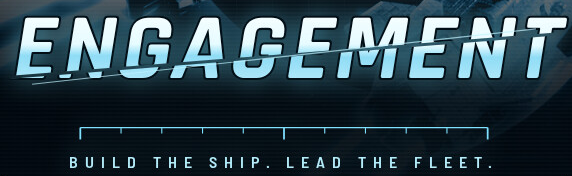
Short description
One capital ship. Fifteen minutes until relief. Bolt salvaged guns onto your hull, raise a fleet of named escorts who rank up and branch, and hold the lane against a Hollow swarm that grows every minute you survive.
Description
You command a single Concord capital ship in the Belt of Ashes. Everything you destroy drops salvage, and every level bolts something onto your hull: flak batteries, rail cannons, tesla coils, drone hangars, shield domes. Each one is a real turret on a real hardpoint. By minute ten your ship looks like the build you chose, and it fights like it.
You do not fight alone. Recruit escorts, send them where you need them, and promote the ones who live. A Lance that survives long enough takes a specialist commission and comes back with a new gun. A pilot who does not goes on the memorial wall with their rank, callsign, branch and kills.
The Hollow do not negotiate. They come in swarms, then in capital ships, then in things the Signals Office has stopped trying to name. You will see them coming: every charged beam, arcing pulse and incoming torpedo is marked on screen and in your ears before it lands.
There are no "+8% damage" cards. A refit might blow armour plates off into a flak burst when your hull is hit, relaunch a lost fighter wing, or turn your first volley into guaranteed critical hits. Your drydock, your mastery and your doctrines work the same way: mechanics you can see, not numbers you have to trust.
Features
- Six flagships, from a line cruiser to a carrier to a cloaking raider, each with its own hardpoint layout, signature system and tree of seven refits.
- 25 modules and 15 evolutions. Max a module, pair it with the right partner, and it becomes something else.
- A fleet that grows with you. Nine escort classes to recruit, order, promote and branch. Pilots keep their callsigns, ranks and records.
- 21 Hollow ship types across five sectors, each sector with its own hazard: ice shard storms, a collapsing dead shipyard, a lightning nebula that halves your sensors, and Hollow space itself.
- Bosses with phases: the Reaver dreadnought, the Maw that swallows escorts whole, the Choir that sings its dead back, and the Hollow Crown.
- Campaign: three acts on a branching map where your hull, modules and pilots carry forward between fights. Eight keepers run the shops, from a salvage broker to a mercenary post to a chapel that keeps the lost, plus a dealer in Hollow-tech the Concord would rather you did not meet.
- A service record that lasts. Forty Command ranks, mastery for every flagship with perks of its own, nine doctrines that trade a strength for a weakness, a drydock of seventeen upgrades, and weekly commissions.
- Endless, Daily, Boss Rush and Challenge modes, and a Heat ladder for when fifteen minutes stops being enough.
- A launch you will want to watch: every sortie opens with your ship leaving its yard cradle and burning out of the system.
- Chase or bridge camera, photo mode, full controller support with Steam Deck button prompts, and 70 Steam achievements.
- Accessibility: colourblind palettes (protanopia, deuteranopia, tritanopia, high contrast), UI and HUD scale, reduced motion, reduced flashes, hold or toggle for boost and the orders wheel, remappable keys, aim assist, adjustable damage taken, and radio chatter shown on screen.
Genres
Key art and logo
Files are the full-size store art. The key art has no logo on it.
Screenshots (12)
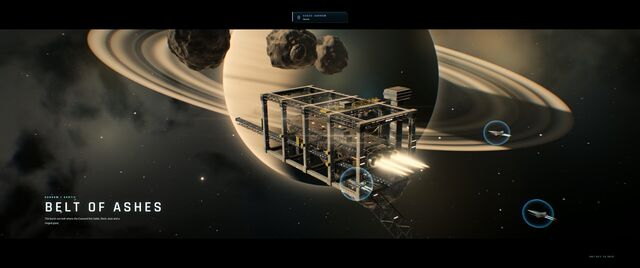
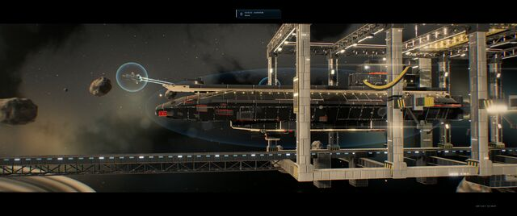
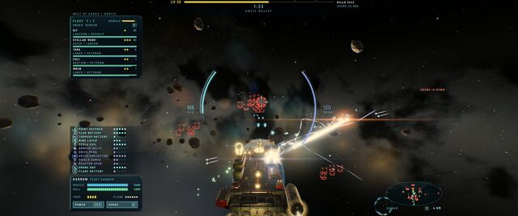
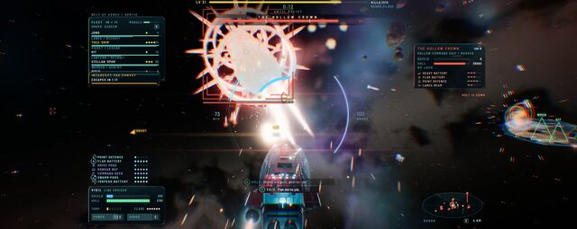
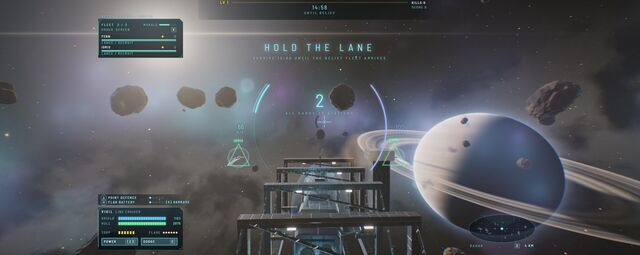
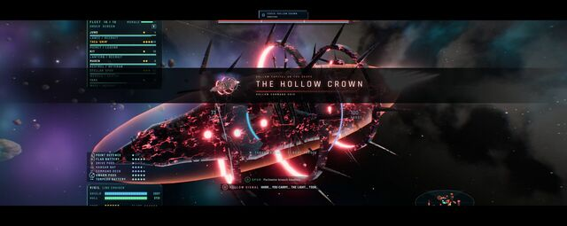
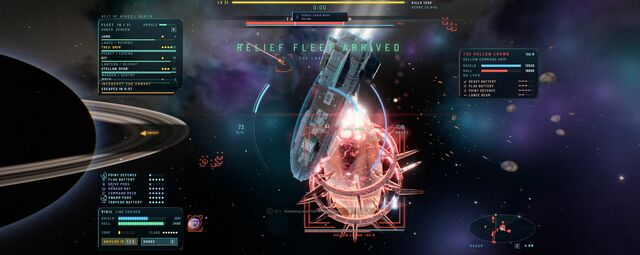
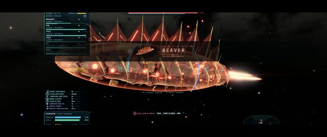
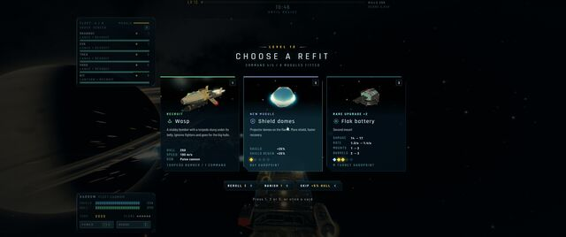
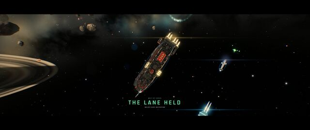
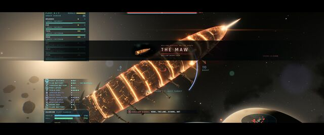
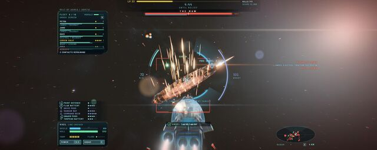
Each thumbnail links to the full-size file (1920 × 765 or 1920 × 804 JPG).
FIGHT
Short description
Let's FIGHT. Queue your steps, guards, and strikes, then commit blind and watch both plans collide into skill-based warfare. Master over twenty weapon-bound fighters, posture breaks, parries and projectiles, with real-time replays to watch the battle back in style.
Description
FIGHT is a tactical fighting game about hidden plans. Queue movement, guards, strikes, and special attacks on a shared timeline. Commit before you know the opposing plan. Then watch the two sequences meet in real time. FIGHT rewards choices made before impact. Close the distance with aggressive strikes, hold ground with guards and parries, create space for a projectile, or use movement to bait an answer.
Choose from over twenty weapon-led fighters. Each move set changes the questions you ask: who controls distance, who threatens a guard, and which attack creates space for the next plan. Learn what every fighter can represent before both players lock in.
Every action has a place on the timeline. Build a chain of movement, defense, strikes, and specials, then commit blind. You do not see the opposing sequence until both plans resolve. Damage matters, but posture creates the opening: pressure a guarded opponent, force a response, and turn a broken defense into a punish.
Once both players commit, the fight runs in real time. Watch the collision, pause on the decision that changed the exchange, and replay the sequence to see how a guard, parry, strike, projectile, or repositioning determined the result.
Genres
Key art and logo
Files are the full-size store art. The key art has no logo on it.
Screenshots (10)
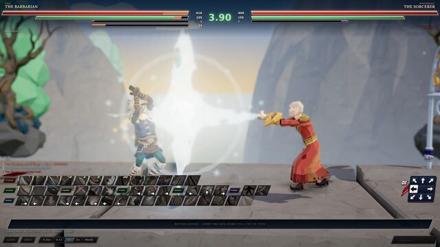
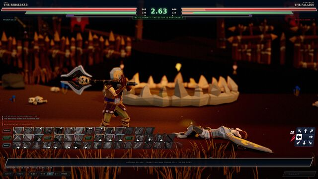
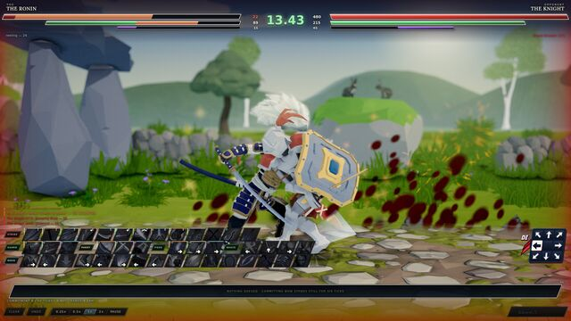
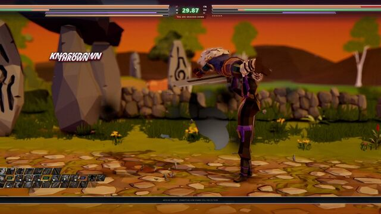
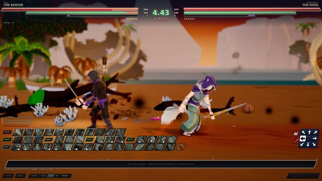
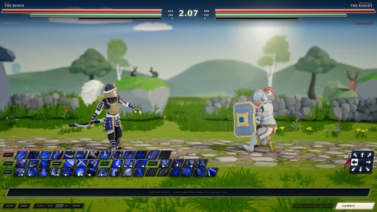
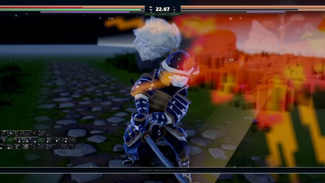
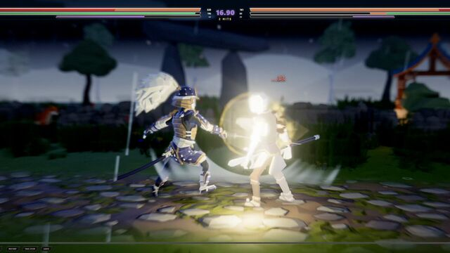
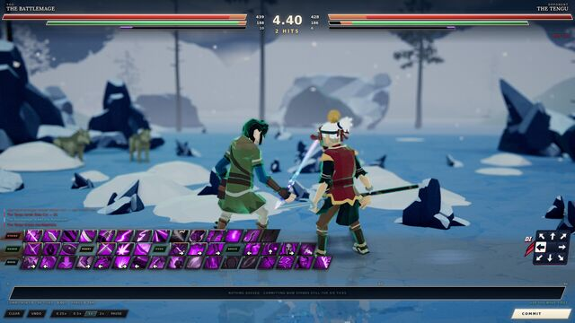
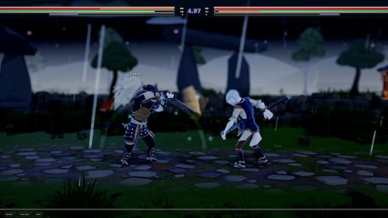
Each thumbnail links to the full-size file (1920 × 1080 JPG).
Street Takeover
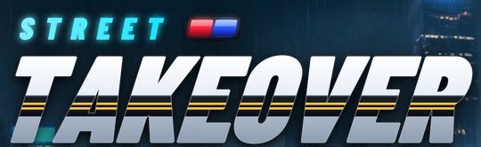
Short description
Drive Fast. Pit Harder. Takeover. Street Takeover is a racing game about high-speed police chases, wrecked and damaged car physics, and taking on the county from the racer's seat or leading its police force in cleaning up the town.
Description
Street Takeover is a racing game built around crashes that actually matter.
Hit a wall and the car takes the hit. Lose a bumper and it stays gone. Bend a wheel and you will feel it through the next corner. Skip the repair bill and take the damage into the next race. If the car gets written off, it is gone.
And the police are learning while you are learning.
Play the getaway campaign and try to stay ahead of a county-wide police response that changes based on what you have already done.
Start with one cruiser on a back road. Keep causing trouble and the response gets heavier: more units, unmarked cars, spike strips, roadblocks, bridge blocks, and eventually the state detail.
Then play those same ten nights from the other side.
As police, you box runners in, call roadblocks, deploy spikes, and try to bring them home without wrecking your own cars. The two campaigns share the same roads, the same events, and the same county.
Features
- Persistent vehicle damage: bodywork, wheels, suspension, glass, engine and radiator damage all affect how the car drives.
- Single-player campaigns for both getaway racers and police
- Split-screen racing and online multiplayer
- Free roam, time trial, drift, duel, derby, elimination and points events
- Keyboard, gamepad and wheel support with rebindable controls
- Photo mode
- Driving school
Genres
Key art and logo
Files are the full-size store art. The key art has no logo on it.
Screenshots (15)
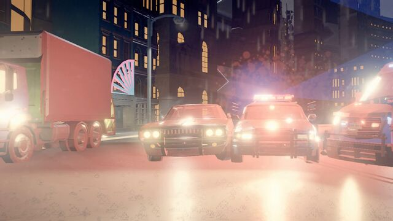
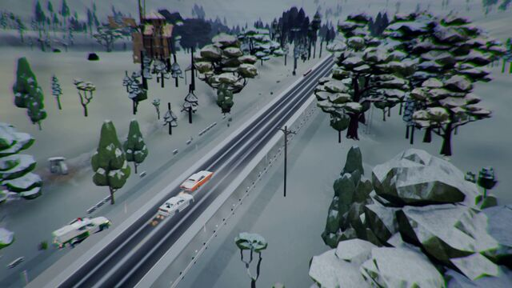
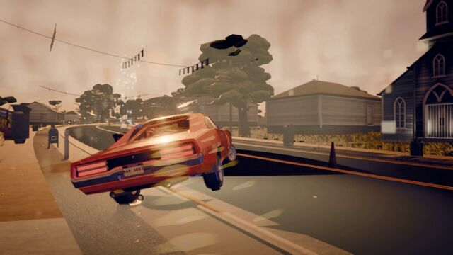
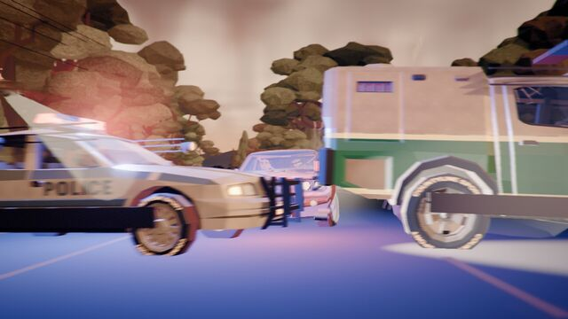
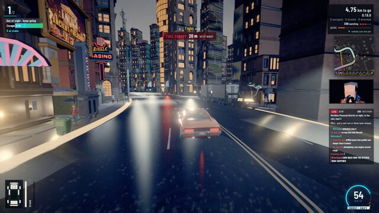
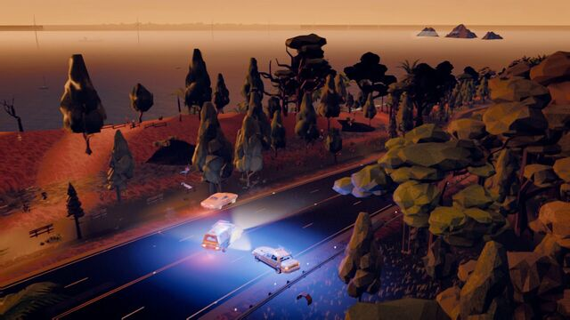
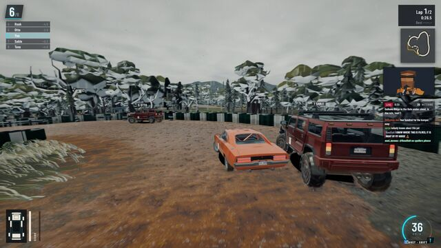
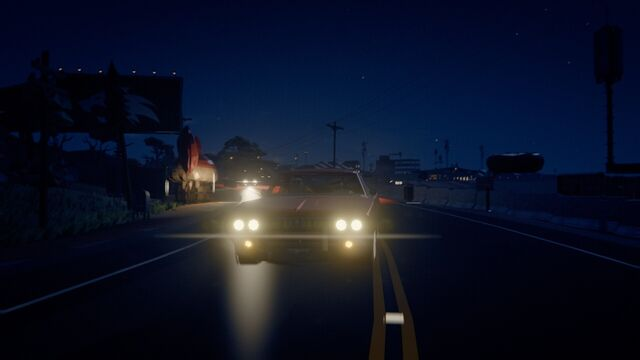
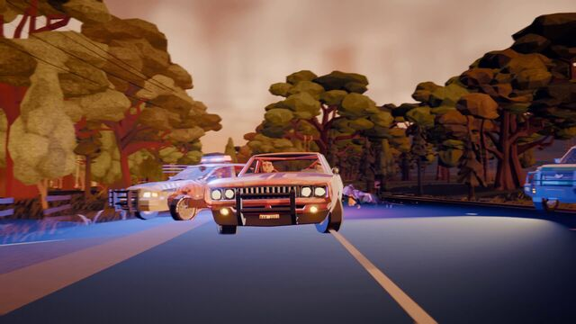
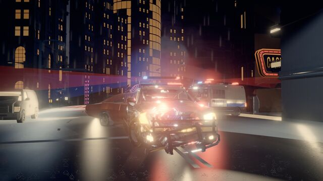
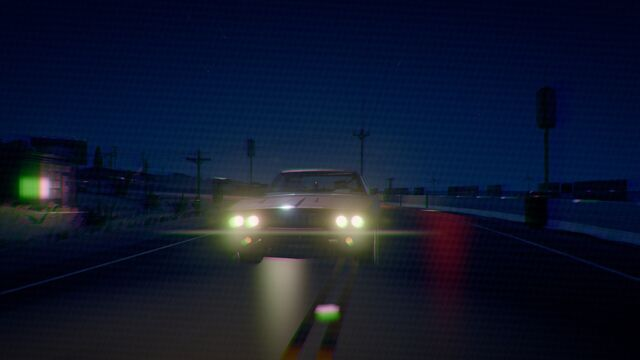
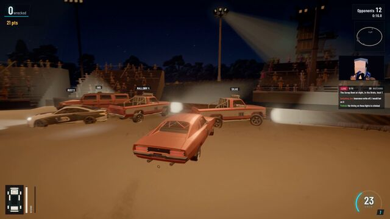
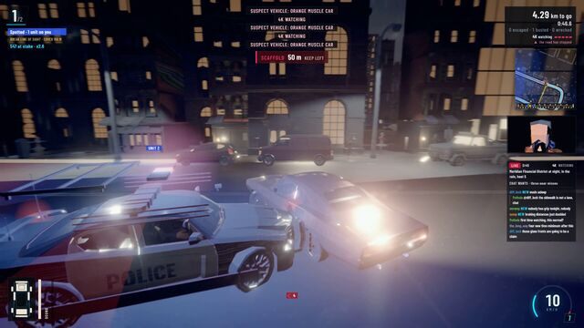
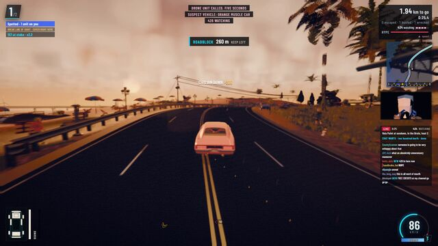
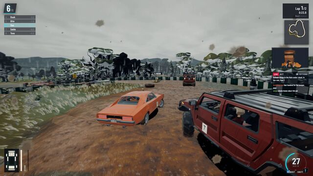
Each thumbnail links to the full-size file (1920 × 1080 JPG).
Field Surgeon
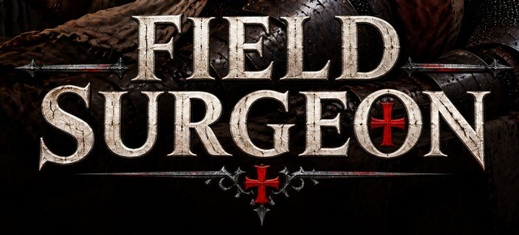
Short description
Scrub in as a field surgeon in a plague-ridden free city at war. Humans, dwarves, elves, orcs, hornfolk and giants come to your table. Draw arrows from bone, close sabre cuts, saw shattered limbs, and face the Malison: a curse that fights back from inside your patients.
Description
Plague smoulders in the Tanners' Rows, the Ostrau company is fighting at the city's gates, and the Hospice of Saint Ildra takes in everyone the city throws away. You are its newly sworn apothecary-surgeon, and the table is never empty.
Eight period instruments: lancet, tongs, leech-pipe, gut thread, Saint's salve, tincture, cautery brand and scrying lens, each with its own motion. Ease an arrow through the muscle that grips it, rock a head loose from the bone, close a sabre cut muscle first and skin second, soften boiling pitch before you lift it, wind a tourniquet before you look for the bleeding vessel, and seal a sucking chest wound as the patient breathes out. Every action is graded; clean chains raise your rank.
Six races to learn. Humans, dwarves, elves, orcs, hornfolk and giants all come through the Hospice doors, and no two cut, bleed or heal alike. A dwarf's hide is thick and his blood dark and slow; the lancet must work patiently. An elf's skin is so thin the lamp glows through it: easy to open, quick to bleed, and unforgiving of a slip. An orc's leather hide turns a hasty blade, his near-black blood clots fast, and tinctures barely touch him. A giant bleeds out slowly and heals slower still. Know your patient before you cut.
Draw the five-pointed sign to invoke the Litany of Stillness and slow time for a few precious seconds, once per operation. Careful: if the Inquisitor of the Ash Tribunal sees it, he will condemn you for witchcraft.
A heretic coven, the Hollow Choir, weaves living curses named for the canonical hours: Matins, Lauds, Prime and five more. Each Malison fights back with its own phases and tricks, and each one leaves a mark on the city.
Features
- Five chapters, over sixty operations, eight Malison Hours: a surgery-action campaign in a grimdark early-modern world
- Injuries surgeons really faced: arrows, sabre cuts, crushing mace blows, boiling pitch, severed arteries, amputations
- Eight period instruments with precise mouse-and-keyboard controls, controller and Steam Deck support
- Graded, combo-driven operations with ranks to chase in every case, plus Guild Trials and Challenge operations
- Assists and accessibility options: generous timers, simplified gestures, one-handed play, a Litany key, reduced flashing and gore settings
Genres
Key art and logo
Files are the full-size store art. The key art has no logo on it.
Screenshots (8)


Each thumbnail links to the full-size file (1920 × 1080 JPG).
Follow
Clips from all four games, posted as @TrevorGamesHQ.